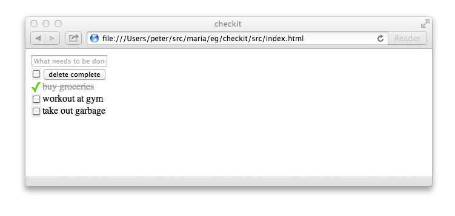
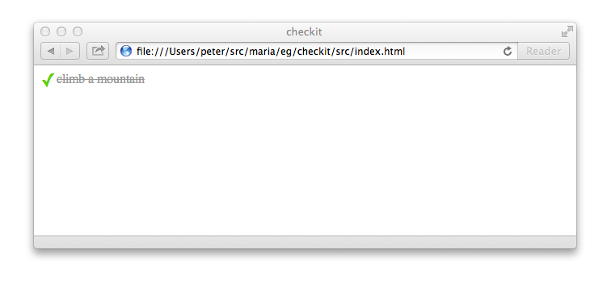
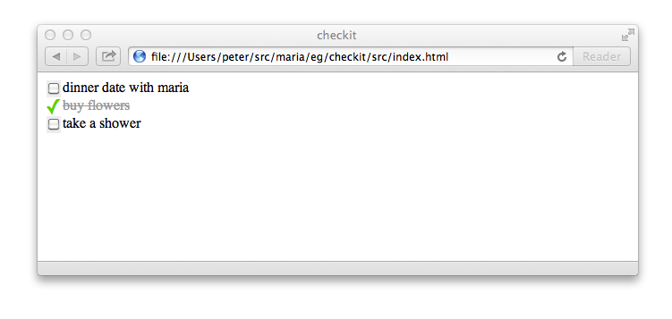
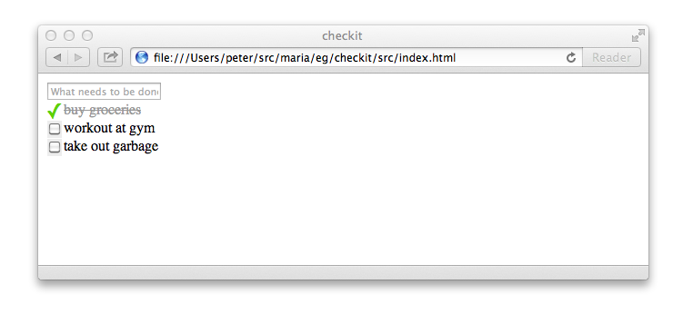

Quick Start Tutorial for the Impatient
We have things to do. Let’s use Maria to build an application called “checkit” to organize our to-dos.

By the end of this tutorial, you’ll understand how the components communicate in an application written in the MVC style with Maria and be ready to create more complex client-side application on your own.
Let’s go...
Separate Their Code From Our Code
There are generic libraries out there in the world that are written, ready, and just waiting for us to download for use in our application. There is application-specific source code that we will write. Create a checkit/ directory to contain the entire application with lib/ and src/ sub-directories to keep these two types of files separate.
-
checkit/lib/src/
Download Maria and Other Libraries
To give our application structure, we’ll use the Maria framework. Download the latest version from the following link and save it as checkit/lib/maria/maria.js.
http://peter.michaux.ca/downloads/maria/current/maria.js
In this application, we’ll need to manipulate the class attribute values of DOM elements. We’ll use the Aristocrat library. Download the latest version from the following link and save it as checkit/lib/aristocrat/aristocrat.js.
http://peter.michaux.ca/downloads/aristocrat/current/aristocrat.js
Namespace Our Application Code
The conventions built into Maria expect our application classes are all properties of a single namespace object. Create a file checkit/src/js/namespace.js defining our namespace object.
var checkit = {};Prepare for Our Own Utilities
It’d be great if every miscellaneous utility function we need in our application was available in a third-party library; however, that is rarely the case in any application. Create a checkit/src/js/util.js file where we’ll add utility functions that we’ll write as we find needs for them.
Modelling To-do Items
We’re building an application for organizing to-do items. For each individual thing we need to do, we’ll create a model object representing that individual to-do.
We must design a class for an individual to-do. The two fundamental questions we’ll ask a to-do model object are:
- What needs doing?
- Has it already been done?
Create a checkit/src/js/models/ directory for all our model classes.
We’ll use maria.Model as the parent class for our checkit.TodoModel class in a file called checkit/src/js/models/TodoModel.js.
maria.Model.subclass(checkit, 'TodoModel', {
properties: {
_content: '',
_isDone: false,
getContent: function() {
return this._content;
},
setContent: function(content) {
content = checkit.trim('' + content);
if (this._content !== content) {
this._content = content;
this.dispatchEvent({type: 'change'});
}
},
isDone: function() {
return this._isDone;
},
setDone: function(isDone) {
isDone = !!isDone;
if (this._isDone !== isDone) {
this._isDone = isDone;
this.dispatchEvent({type: 'change'});
}
},
toggleDone: function() {
this.setDone(!this.isDone());
}
}
});The checkit.trim function is an example of a utility function that we’ll add to our checkit/src/js/util.js file.
checkit.trim = function(str) {
return str.replace(/^\s+|\s+$/g, '');
};To find out more about this checkit.TodoModel class, let’s get our hands dirty and experiment in a browser console like Firebug.
Create an HTML document called checkit/src/index.html that loads both the libraries and our application code.
<!DOCTYPE html>
<html>
<head>
<title>checkit</title>
</head>
<body>
<script src="../lib/maria/maria.js"></script>
<script src="../lib/aristocrat/aristocrat.js"></script>
<script src="js/namespace.js"></script>
<script src="js/util.js"></script>
<script src="js/models/TodoModel.js"></script>
</body>
</html>With the above page loaded in the browser, we can interactively explore in the console.
Create a new to-do and check its default content and done values.
> var todoModel = new checkit.TodoModel();
undefined
> todoModel.getContent();
""
> todoModel.isDone();
falseLet’s make the to-do more motivating to do.
> todoModel.setContent('test drive Ferrari');
undefined
> todoModel.getContent();
"test drive Ferrari"
Looking good so far but those are just getters and setters. We haven’t seen any MVC magic yet. The observer pattern is the first bit of magic we’ll explore.
In most MVC applications, a model object communicates with one or more view objects via the observer pattern. When a particular event type happens on the model, the model notifies all the views who’ve added themselves as observers of that event type on that view. This gives the views an opportunity to react to the model’s event. Typically a view object wants to keep its visual representation up-to-date to match the model object’s current state. The observer pattern creates a very loose coupling between a model and the views as the model object doesn’t know or even care about what the view objects are doing.
Let’s see the observer pattern relationship between a to-do model object and fake view object.
We create a fake view object and add it as an observer of the to-do model object.
> var view = {update: function(evt) {console.log('The model changed!');}};
undefined
> maria.on(todoModel, 'change', view, 'update');
undefinedNow a change to the model object’s done value will cause the model to call the view’s update method.
> todoModel.setDone(true);
"The model changed!"
undefinedIf we remove the observer from the model and change the done value again, we see the view is no longer notified.
> maria.off(todoModel, 'change', view, 'update');
undefined
todoModel.setDone(false);
undefined
Try adding multiple fake views as observers of one model. Try calling todoModel.setDone(true) multiple times consecutively. What information does the evt object contain that is passed to the observer's method? Experiment. Explore.
If you are a devout test-driven developer, you’re surely disappointed that code’s been written but tests haven’t. Forgive us. We have sinned. Now is a good time to repent and make amends. Add your test library in a subdirectory of checkit/lib/ if necessary, your tests in a checkit/tst/ or checkit/spec/ directory, and float your boat. By the way, I recommend you check out the great Buster automated testing tools which are used for testing the Maria source code.
Viewing a To-do
Now that we can model a to-do item, we’ll need a way to show it in the browser. We'll create a view for a to-do. Creating a view can use several files. In this case, there will be an HTML template, some CSS, a couple images, and the JavaScript that brings to view to life.
Create a directory checkit/src/js/templates/ for all our HTML templates.
Add the following code to a file checkit/src/js/templates/TodoTemplate.js.
checkit.TodoTemplate =
'<li class="Todo">' +
'<span class="checkbox"></span> ' +
'<span class="content"></span>' +
'</li>';(In a full, industrial-strength development environment this template would be expressed in a file containing only HTML and be compiled to the JavaScript above as part of the server/build functionality. Due to the limitations of a simple example that does not require any special server environment to try, the manually compiled version is included.)
Notice that the elements that will be interesting to our JavaScript view objects are identified by class attributes. There are no id attributes. This is always a good practice and is necessary so that we can have multiple to-do items displayed simultaneously in the browser.
Create a directory checkit/src/css/ for all our CSS files.
The CSS for the to-do view goes in checkit/src/css/Todo.css.
.Todo {
list-style-type: none;
margin: 0;
padding: 0;
position: relative;
height: 20px;
padding-left: 20px;
}
.TodoDone {
color: #999;
text-decoration: line-through;
}
.Todo .checkbox {
height: 20px;
width: 20px;
background: url(../img/undone.png) no-repeat center center;
cursor: pointer;
display: block;
position: absolute;
top: 0;
left: 0;
}
.TodoDone .checkbox {
background-image: url(../img/done.png);
}Create a directory checkit/src/img/ for all our images.
Save the following two images.
checkit/src/img/undone.pngcheckit/src/img/done.png
The HTML, CSS, and images files above are things that a non-programmer might work on. We want to keep their work as non-technical as possible.
The part that most programmers will find interesting is bringing the to-do item to life so that it always reflects the state of a particular to-do model object and reacting to user clicks to mark the to-do as complete. Some JavaScript please...
Create a directory checkit/src/js/views/ for all our view classes.
Create a file checkit/src/js/views/TodoView.js containing the following.
maria.ElementView.subclass(checkit, 'TodoView', {
uiActions: {
'click .checkbox': 'onClickCheckbox'
},
properties: {
buildData: function() {
var model = this.getModel();
this.find('.content').innerHTML = checkit.escapeHTML(model.getContent());
aristocrat[model.isDone() ? 'addClass' : 'removeClass'](
this.find('.Todo'), 'TodoDone');
},
update: function() {
this.buildData();
}
}
});The uiActions specify user events that will be passed on to a controller object which we’ll see soon. For a to-do, the only thing the user can do is check or uncheck that the to-do is done or not done.
By naming convention, Maria knows to use the HTML in checkit.TodoTemplate when creating a checkit.TodoView. This HTML is used to construct a DOM node that will represent the to-do on screen. The buildData property is used to show the to-do model data in that DOM node. In this case, we just need to show the content and whether or not the to-do is done.
When the view’s model object changes, the view’s update method will be called. Since an update requires that we just do the same things that are done in buildData to keep the view in sync with model, we can simply reuse buildData. Reusing various bits of building code during updating is a common way to keep a view up-to-date as the model changes.
The view uses another utility function that we can add to checkit/src/js/util.js.
checkit.escapeHTML = function(str) {
return str.replace('&', '&').replace('<', '<');
};We’re itching to see our to-do in the browser. Update our checkit/src/index.html file.
<!DOCTYPE html>
<html>
<head>
<title>checkit</title>
<link href="css/Todo.css" rel="stylesheet" type="text/css">
</head>
<body>
<script src="../lib/maria/maria.js"></script>
<script src="../lib/aristocrat/aristocrat.js"></script>
<script src="js/namespace.js"></script>
<script src="js/util.js"></script>
<script src="js/models/TodoModel.js"></script>
<script src="js/templates/TodoTemplate.js"></script>
<script src="js/views/TodoView.js"></script>
</body>
</html>Reloading the index page and run the following in the console.
> var todoModel = new checkit.TodoModel();
undefined
> todoModel.setContent('climb a mountain');
undefined
> var view = new checkit.TodoView(todoModel);
undefined
> document.body.appendChild(view.build());
undefinedThere it is. Our nice to-do view sitting pretty in the browser!

What I’ll bet you’re really dying to see is the observer pattern in action and the view staying in sync with the model object’s changing state. It’s easy to see with a few more lines in the console.
> todoModel.setContent('climb Everest');
undefined
> todoModel.setDone(true);
undefined
> todoModel.setDone(false);Ta-da! Magic. Notice we don’t have to manually add the view as an observer of the model. The Maria framework makes that connection for us.

Try adding two views with the same model to the document. Changing the model object once will update both views! That is a peak at more MVC magic.
Reacting to User Action with Controllers
In the checkit.TodoView we’ve used the uiActions to map a click on the to-do’s checkbox to a checkit.TodoController object. Since we haven’t written the controller class yet, clicking on the to-do’s checkbox will cause an error. Let’s fix that.
Create a directory checkit/src/js/controllers/ for all our controller classes.
Create the checkit.TodoController class in a file called checkit/src/js/controllers/TodoController.js.
maria.Controller.subclass(checkit, 'TodoController', {
properties: {
onClickCheckbox: function() {
this.getModel().toggleDone();
}
}
});It is about as simple a controller class as possible. For a to-do that is not yet done, if the the checkbox is clicked then we want the to-do to become done. If the to-do is already done then a click should change the to-do back to undone. Another way to say it is the controller implements the strategy of what needs to be done when a user action happens. This is the second main design pattern in MVC: the strategy pattern.
Note that we don’t have to create an object of the controller class. Maria does that for us the first time the view needs a controller. By naming convention, Maria knows to use a checkit.TodoController object for a checkit.TodoView object. Also, we don’t have to set the model object in the controller object. Maria does that for us so that the controller’s model always matches the view’s model. Following the conventions means Maria will do all this wiring for us.
We don't want to use the console to add a to-do view to page each time we reload the browser so let’s add a checkit/src/js/bootstrap.js file to do that for us. This file will evolve as our application does.
(function() {
var todoModel = new checkit.TodoModel();
todoModel.setContent('climb a mountain');
var view = new checkit.TodoView(todoModel);
document.body.appendChild(view.build());
}());Update the checkit/src/index.html file.
<!DOCTYPE html>
<html>
<head>
<title>checkit</title>
<link href="css/Todo.css" rel="stylesheet" type="text/css">
</head>
<body>
<script src="../lib/maria/maria.js"></script>
<script src="../lib/aristocrat/aristocrat.js"></script>
<script src="js/namespace.js"></script>
<script src="js/util.js"></script>
<script src="js/models/TodoModel.js"></script>
<script src="js/templates/TodoTemplate.js"></script>
<script src="js/views/TodoView.js"></script>
<script src="js/controllers/TodoController.js"></script>
<script src="js/bootstrap.js"></script>
</body>
</html>When you reload the browser, the to-do should be visible. Now click the checkbox and watch the to-do change from undone to done over and over again. Climbing a mountain was never so easy.
Now you’ve seen model, view, and controller objects in action and communicating. A view visually represents the state of a model. A model notifies views when the model changes and the views update themselves. A view delegates user events to a controller. The controller modifies the model as necessary. That is a lot to see already.
It even works in Internet Explorer 6.
Modelling a Set of To-dos
There’s never enough time in life for all things we want to do. We need to manage a set of to-dos. As life moves along, we’ll think of more things to do and hopefully we’ll actually get some things done. We'll add and delete individual to-do objects from another kind of model object representing a set of to-dos. Let’s create a class who’s objects are just that.
An object of the maria.SetModel class is an unordered set that can hold any number of other model objects. Observers of a set model are notified when those other model objects are added or deleted from the set. We can subclass maria.SetModel as a starting point for our checkit.TodosModel class in a file checkit/src/js/models/TodosModel.js.
maria.SetModel.subclass(checkit, 'TodosModel', {
properties: {
isAllDone: function() {
return (this.size > 0) &&
this.every(function(todo) {
return todo.isDone();
});
},
isAllUndone: function() {
return this.every(function(todo) {
return !todo.isDone();
});
},
markAllDone: function() {
this.forEach(function(todo) {
todo.setDone(true);
});
},
markAllUndone: function() {
this.forEach(function(todo) {
todo.setDone(false);
});
},
deleteDone: function() {
var doneTodos = [];
this.forEach(function(todo) {
if (todo.isDone()) {
doneTodos.push(todo);
}
});
this['delete'].apply(this, doneTodos);
}
}
});Add this file to the checkit/src/index.html page.
<!DOCTYPE html>
<html>
<head>
<title>checkit</title>
<link href="css/Todo.css" rel="stylesheet" type="text/css">
</head>
<body>
<script src="../lib/maria/maria.js"></script>
<script src="../lib/aristocrat/aristocrat.js"></script>
<script src="js/namespace.js"></script>
<script src="js/util.js"></script>
<script src="js/models/TodoModel.js"></script>
<script src="js/models/TodosModel.js"></script>
<script src="js/templates/TodoTemplate.js"></script>
<script src="js/views/TodoView.js"></script>
<script src="js/controllers/TodoController.js"></script>
<script src="js/bootstrap.js"></script>
</body>
</html>Reload the browser and explore some more. Create a set for to-dos and add an observer who will log to-dos added to the set.
> var todosModel = new checkit.TodosModel();
undefined
> var view = {update: function(evt) {console.log(evt.addedTargets.map(function(todo) {return todo.getContent();}));}};
undefined
> maria.on(todosModel, 'change', view, 'update');
undefinedNow add a to-do to the set.
> var todoModel = new checkit.TodoModel();
undefined
> todoModel.setContent('dinner date with Maria');
undefined
> todosModel.add(todoModel);
["dinner date with Maria"]
trueThere are a few things we should probably do before our date. Let’s add them.
> var flowers = new checkit.TodoModel();
undefined
> flowers.setContent('buy flowers');
undefined
> var shower = new checkit.TodoModel();
undefined
> shower.setContent('take a shower');
undefined
> todosModel.add(flowers, shower);
["buy flowers", "take a shower"]
trueWe see that adding multiple to-do models to the set with one call to the set’s add method means only one event is fired. This reduces the number of updates that views have to do. Since updating views usually involves manipulating the DOM and manipulating the DOM is usually slow, keeping view updates to a minimum is a particularly good part of the application to be conservative.
When we go out and buy the flowers, we’ll mark the corresponding to-do as done. Let’s change the view’s update method so we can examine what happens to the set when the to-do is marked as done. Remember that the view is observing the set.
> view.update = function(evt) {console.log(evt.target.constructor === checkit.TodoModel, evt.currentTarget.constructor === checkit.TodosModel);};
function()
> flowers.setDone(true);
true true
undefined
What’s important to note above is that the evt.target is the flowers to-do but that the event bubbles up to the containing to-dos set which is the evt.currentTarget. This bubbling makes it possible for views to observe all the activity on an entire set of models without our application code having to manually add and remove the view as an observer for each model in the set.
We might want to clean up our to-dos set by deleting all the to-do models that are done.
> todosModel.deleteDone();
false true
undefined
> todosModel.size;
2
You may have noticed that the implementation of the deleteDone method contains this['delete'] syntax. Since delete is a JavaScript keyword, older browsers did not allow us to write the simpler this.delete syntax which works in newer browsers.
Our model layer is complete.
Well. The tests. Yes, yes. Please write them.
Viewing a Set of To-dos
Now that we can model a set of to-dos, it would be great to see them. Let’s build a list view for to-dos.
Create a list template in checkit/src/js/templates/TodosListTemplate.js.
checkit.TodosListTemplate =
'<ul class="TodosList"></ul>';A little bit of CSS for the view in checkit/src/css/TodosList.css.
.TodosList {
margin: 0;
padding: 0;
}Simple so far.
The checkit.TodosListView class will inherit from maria.SetView. This means our view will automatically add and delete child checkit.TodoView objects for us when a checkit.TodoModel is added or deleted from the checkit.TodosModel. Add the following in checkit/src/js/views/TodosListView.js.
maria.SetView.subclass(checkit, 'TodosListView', {
properties: {
createChildView: function(todoModel) {
return new checkit.TodoView(todoModel);
}
}
});To see a list in the browser, let’s update the checkit/src/js/bootstrap.js file to create a set model containing a few to-do items and add a view to the page.
maria.on(window, 'load', function() {
var todosModel = new checkit.TodosModel();
var todoModel = new checkit.TodoModel();
todoModel.setContent('dinner date with Maria');
todosModel.add(todoModel);
var todoModel = new checkit.TodoModel();
todoModel.setContent('buy flowers');
todosModel.add(todoModel);
var todoModel = new checkit.TodoModel();
todoModel.setContent('take a shower');
todosModel.add(todoModel);
var view = new checkit.TodosListView(todosModel);
document.body.appendChild(view.build());
});Update checkit/src/index.html to load all our new files.
<!DOCTYPE html>
<html>
<head>
<title>checkit</title>
<link href="css/TodosList.css" rel="stylesheet" type="text/css">
<link href="css/Todo.css" rel="stylesheet" type="text/css">
</head>
<body>
<script src="../lib/maria/maria.js"></script>
<script src="../lib/aristocrat/aristocrat.js"></script>
<script src="js/namespace.js"></script>
<script src="js/util.js"></script>
<script src="js/models/TodoModel.js"></script>
<script src="js/models/TodosModel.js"></script>
<script src="js/templates/TodoTemplate.js"></script>
<script src="js/views/TodoView.js"></script>
<script src="js/controllers/TodoController.js"></script>
<script src="js/templates/TodosListTemplate.js"></script>
<script src="js/views/TodosListView.js"></script>
<script src="js/bootstrap.js"></script>
</body>
</html>Reload the browser and voila! A set of to-dos displayed as a list in the browser.

Feel free to click the checkboxes of the to-do items in the list.
Note there is no controller class called checkit.TodosListController. Since a checkit.TodosListView object never delegates any decisions to a controller object, a controller object is never created and so it is ok that the checkit.TodosListController is not defined.
Creating To-do Items
There is an obviously missing piece of functionality. We need to be able to create to-do items through a form in the user interface and see them appear in the list. Easy peasy. Just another round of HTML, CSS, a view and a controller.
Create a template in checkit/src/js/templates/TodosInputTemplate.js.
checkit.TodosInputTemplate =
'<div class="TodosInput">' +
'<input class="content" placeholder="What needs to be done?" type="text">' +
'<span class="instructions">Press enter to add this task.</span>' +
'</div>';A bit of CSS in checkit/src/css/TodosInput.css.
.TodosInput .instructions {
visibility: hidden;
}
.TodosInputPending .instructions {
visibility: visible;
}The actual view class in checkit/src/js/views/TodosInputView.js.
maria.ElementView.subclass(checkit, 'TodosInputView', {
uiActions: {
'focus .content': 'onFocusInput' ,
'blur .content': 'onBlurInput' ,
'keyup .content': 'onKeyupInput' ,
'keypress .content': 'onKeypressInput'
},
properties: {
getInputValue: function() {
return this.find('.content').value;
},
clearInput: function() {
this.find('.content').value = '';
},
setPending: function(pending) {
aristocrat[pending ? 'addClass' : 'removeClass'](
this.find('.TodosInput'), 'TodosInputPending');
}
}
});This view does take user events and delegates them to four methods in a controller. Create the controller class in, you guessed it, checkit/src/js/controllers/TodosInputController.js.
maria.Controller.subclass(checkit, 'TodosInputController', {
properties: {
onFocusInput: function() {
this.onKeyupInput();
},
onBlurInput: function() {
this.getView().setPending(false);
},
onKeyupInput: function() {
var view = this.getView();
view.setPending(!checkit.isBlank(view.getInputValue()));
},
onKeypressInput: function(evt) {
if (evt.keyCode == 13) {
var view = this.getView();
var value = view.getInputValue();
if (!checkit.isBlank(value)) {
var todo = new checkit.TodoModel();
todo.setContent(value);
this.getModel().add(todo);
view.clearInput();
}
}
}
}
});The controller uses another utility so we add that to the checkit/src/js/util.js file.
checkit.isBlank = function(str) {
return /^\s*$/.test(str);
};Update the checkit/src/js/bootstrap.js so that the to-do set starts empty and the input form is added.
maria.on(window, 'load', function() {
var model = new checkit.TodosModel();
var view = new checkit.TodosInputView(model);
document.body.appendChild(view.build());
var view = new checkit.TodosListView(model);
document.body.appendChild(view.build());
});Add the new files to checkit/src/index.html.
<!DOCTYPE html>
<html>
<head>
<title>checkit</title>
<link href="css/TodosInput.css" rel="stylesheet" type="text/css">
<link href="css/TodosList.css" rel="stylesheet" type="text/css">
<link href="css/Todo.css" rel="stylesheet" type="text/css">
</head>
<body>
<script src="../lib/maria/maria.js"></script>
<script src="../lib/aristocrat/aristocrat.js"></script>
<script src="js/namespace.js"></script>
<script src="js/util.js"></script>
<script src="js/models/TodoModel.js"></script>
<script src="js/models/TodosModel.js"></script>
<script src="js/templates/TodoTemplate.js"></script>
<script src="js/views/TodoView.js"></script>
<script src="js/controllers/TodoController.js"></script>
<script src="js/templates/TodosInputTemplate.js"></script>
<script src="js/views/TodosInputView.js"></script>
<script src="js/controllers/TodosInputController.js"></script>
<script src="js/templates/TodosListTemplate.js"></script>
<script src="js/views/TodosListView.js"></script>
<script src="js/bootstrap.js"></script>
</body>
</html>Reload the browser and fill the list with all the things you want to-do.

A Toolbar to Manage the Set of To-dos
Our application is quite advanced already. We’ll carry on and add a toolbar that allows us to mark all to-do items in the set as done or undone and allows us to clear all completed to-do items from the set.
Create a template in checkit/src/js/templates/TodosToolbarTemplate.js.
checkit.TodosToolbarTemplate =
'<ul class="TodosToolbar">' +
'<li><span class="allCheckbox"></span></li> ' +
'<li><input class="deleteDone" type="button" value="delete complete"></input></li>' +
'</ul>';The CSS in checkit/src/css/TodosToolbar.css.
.TodosToolbar {
margin: 0;
padding: 0;
position: relative;
}
.TodosToolbar li {
list-style-type: none;
margin: 0;
padding: 0;
display: inline;
}
.TodosToolbar .allCheckbox {
height: 20px;
width: 20px;
background: url(../img/undone.png) no-repeat center center;
cursor: pointer;
display: block;
float: left;
}
.TodosToolbar .allCheckboxAllDone {
background-image: url(../img/done.png);
}The view class in checkit/src/js/views/TodosToolbarView.js.
maria.ElementView.subclass(checkit, 'TodosToolbarView', {
uiActions: {
'click .allCheckbox': 'onClickAllCheckbox',
'click .deleteDone' : 'onClickDeleteDone'
},
properties: {
buildData: function() {
var model = this.getModel();
var checkbox = this.find('.allCheckbox');
var button = this.find('.deleteDone');
var isAllDone = model.isAllDone();
aristocrat[isAllDone ? 'addClass' : 'removeClass'](
this.find('.allCheckbox'), 'allCheckboxAllDone');
button.disabled = model.isAllUndone();
},
update: function() {
this.buildData();
}
}
});The controller in checkit/src/js/controllers/TodosToolbarController.js.
maria.Controller.subclass(checkit, 'TodosToolbarController', {
properties: {
onClickAllCheckbox: function() {
var model = this.getModel();
if (model.isAllDone()) {
model.markAllUndone();
} else {
model.markAllDone();
}
},
onClickDeleteDone: function() {
this.getModel().deleteDone();
}
}
});Create a new toolbar view during bootstrapping in checkit/src/js/bootstrap.js.
maria.on(window, 'load', function() {
var model = new checkit.TodosModel();
var view = new checkit.TodosInputView(model);
document.body.appendChild(view.build());
var view = new checkit.TodosToolbarView(model);
document.body.appendChild(view.build());
var view = new checkit.TodosListView(model);
document.body.appendChild(view.build());
});And update checkit/src/index.html.
<!DOCTYPE html>
<html>
<head>
<title>checkit</title>
<link href="css/TodosInput.css" rel="stylesheet" type="text/css">
<link href="css/TodosToolbar.css" rel="stylesheet" type="text/css">
<link href="css/TodosList.css" rel="stylesheet" type="text/css">
<link href="css/Todo.css" rel="stylesheet" type="text/css">
</head>
<body>
<script src="../lib/maria/maria.js"></script>
<script src="../lib/aristocrat/aristocrat.js"></script>
<script src="js/namespace.js"></script>
<script src="js/util.js"></script>
<script src="js/models/TodoModel.js"></script>
<script src="js/models/TodosModel.js"></script>
<script src="js/templates/TodosInputTemplate.js"></script>
<script src="js/views/TodosInputView.js"></script>
<script src="js/controllers/TodosInputController.js"></script>
<script src="js/templates/TodosListTemplate.js"></script>
<script src="js/views/TodosListView.js"></script>
<script src="js/templates/TodosToolbarTemplate.js"></script>
<script src="js/views/TodosToolbarView.js"></script>
<script src="js/controllers/TodosToolbarController.js"></script>
<script src="js/templates/TodoTemplate.js"></script>
<script src="js/views/TodoView.js"></script>
<script src="js/controllers/TodoController.js"></script>
<script src="js/bootstrap.js"></script>
</body>
</html>Reload the browser and play with the new toolbar tools.
Combine Smaller Views Into a Single View
Our bootstrap file currently creates three views, all observing the same model, and add each view to the page. That is fine and dandy. It something you want to do at times. That said, it is also useful to be able to gather together multiple views as children of a single parent view. This allows the bootstrapping code to deal with only one view (i.e. the parent view) and the three child views will still appear in the page. This is the beauty of the composite pattern: the third of the three primary patterns in the MVC architecture.
Create a new template file for our parent view in checkit/src/js/templates/TodosAppTemplate.js
checkit.TodosAppTemplate =
'<div class="TodosApp"></div>';Create a new view in checkit/src/js/views/TodosAppView.js
maria.ElementView.subclass(checkit, 'TodosAppView', {
constructor: function(model) {
maria.ElementView.apply(this, arguments);
this.appendChild(new checkit.TodosInputView(model));
this.appendChild(new checkit.TodosToolbarView(model));
this.appendChild(new checkit.TodosListView(model));
}
});This view shows a feature of the subclass mechanism that we haven't seen before. The optional constructor property makes it possible to specify the constructor function that is checkit.TodosAppView. Just remember to call the super class constructor function with the appropriate arguments as shown with apply in the first line of this constructor function.
Update the checkit/src/js/bootstrap.js file to create a single checkit.TodosAppView instead of three separate views for the input, toolbar, and list views.
maria.on(window, 'load', function() {
var model = new checkit.TodosModel();
var view = new checkit.TodosAppView(model);
document.body.appendChild(view.build());
});Finally update the checkit/src/index.html page.
<!DOCTYPE html>
<html>
<head>
<title>checkit</title>
<link href="css/TodosInput.css" rel="stylesheet" type="text/css">
<link href="css/TodosToolbar.css" rel="stylesheet" type="text/css">
<link href="css/TodosList.css" rel="stylesheet" type="text/css">
<link href="css/Todo.css" rel="stylesheet" type="text/css">
</head>
<body>
<script src="../lib/maria/maria.js"></script>
<script src="../lib/aristocrat/aristocrat.js"></script>
<script src="js/namespace.js"></script>
<script src="js/util.js"></script>
<script src="js/models/TodoModel.js"></script>
<script src="js/models/TodosModel.js"></script>
<script src="js/templates/TodosAppTemplate.js"></script>
<script src="js/views/TodosAppView.js"></script>
<script src="js/templates/TodosInputTemplate.js"></script>
<script src="js/views/TodosInputView.js"></script>
<script src="js/controllers/TodosInputController.js"></script>
<script src="js/templates/TodosListTemplate.js"></script>
<script src="js/views/TodosListView.js"></script>
<script src="js/templates/TodosToolbarTemplate.js"></script>
<script src="js/views/TodosToolbarView.js"></script>
<script src="js/controllers/TodosToolbarController.js"></script>
<script src="js/templates/TodoTemplate.js"></script>
<script src="js/views/TodoView.js"></script>
<script src="js/controllers/TodoController.js"></script>
<script src="js/bootstrap.js"></script>
</body>
</html>When you reload the page, you’ll see that nothing has changed. The three smaller views appear just as they did before but the bootstrapping code has been significantly simplified. Bootstrapping is only concerned with dealing with one view and can ignore the fact that that view is a composite comprised of three other views.
The Grand Finally
To see the amazing power of the MVC architecture, try the following checkit/src/js/bootstrap.js file.
maria.on(window, 'load', function() {
var model = new checkit.TodosModel();
for (var i = 0; i < 2; i++) {
var view = new checkit.TodosAppView(model);
document.body.appendChild(view.build());
}
});Reload the browser. Create a few to-do items. Mark some of them as done. Click the delete button.
Yes this is exciting. Remain calm. We don’t want you to blow a gasket. Meditate on what you have just witnessed. Then join us over at the Maria project on GitHub.